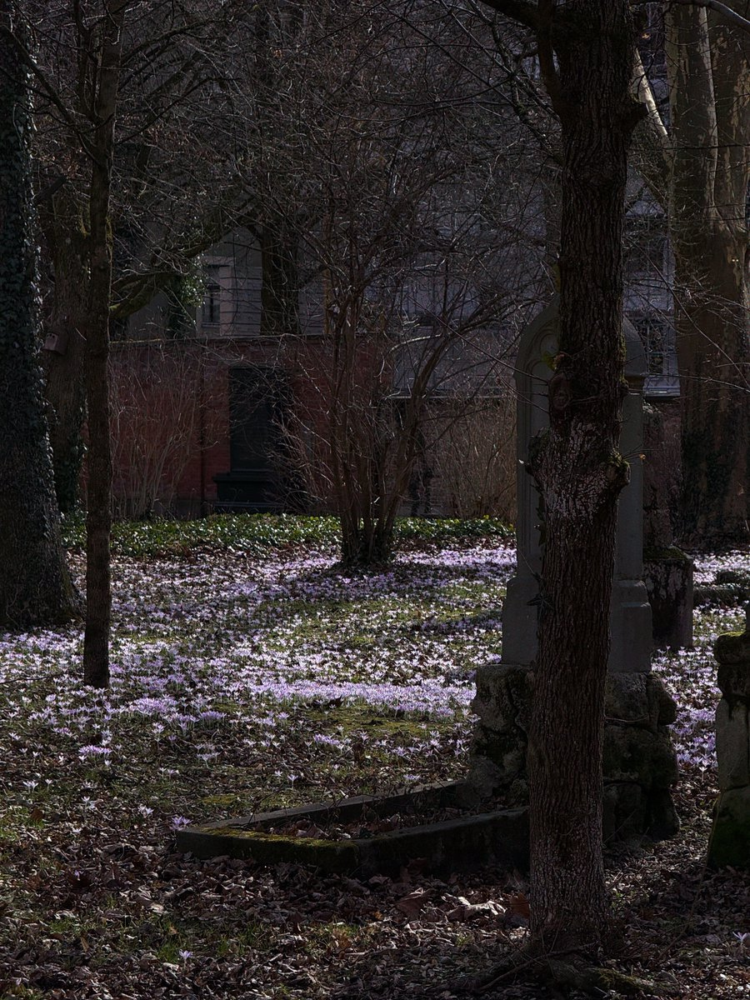

Life Without Escaping
I was sitting at a bus stop with five strangers, everyone on their phones except for me and a grandma.
We were staring at some shops across the street on a concerningly warm and sunny day, with a clear blue sky at the beginning of February. For the first time in a while, I had left my AirPods at home.
“That old generation still knows how to live without distractions,” I think to myself, confident that I had single-handedly restored her faith in the younger generation—always on their phones, rushing around, stressed out of their minds. Not me, though. I left my AirPods at home.
Thirty seconds later, she takes out the same phone I have and disappears into a faraway mythical land called WhatsApp Stories (I’m in Europe), her presence never to be felt again until the bus arrives.
Now I’m alone—not physically, but… I mean, everyone else is on their phones. I resist the urge to join them, to swipe myself onto another planet. I let the bus take off without me—too many people on it.
“Has walking always been this loud?” crosses my mind as I wander around the city, trying to spot people without headphones.
I’m dramatizing. But also… not.
We are hollowing out, escaping into our phones, noise-canceling the world around us while hoping our online posts resonate with someone—some external proof that we exist in the same universe as these people.
But if we stand still for a moment and just observe—without thoughts, without judgment—we can feel the whole universe resonating within us. No need to escape. And by “we,” I mean myself, but I feel less alone if I drag you into this as well.
Even though the people around me are zoned out, just the fact that I exist in the same physical space as them, rather than having escaped into the digital void, makes me feel… more.
After a while, the urge to pull out my phone fades. I see someone wearing cool shoes. Nice. And no one is paying attention to me. I look around, notice people, listen to the sounds, exist. A deep calmness sets in, without any effort—something I had been searching for in an endless feed of advice, videos, and smart-sounding tweets.
Why do I always forget that this happens if I just stop for a minute and observe life? It's so simple.
It doesn’t really matter whose fault it is, what got us here—advertising-fueled internet, globalization, 24-hour news cycles, Steve, Zuck, or our own limitless hunger for distractions and cheap dopamine. It also doesn’t matter if our average screen time is six hours and forty minutes. It could be 30 minutes for all I care.
The only thing that matters is how it feels. And what it feels like is that we are drowning in a global stream of content, unable to disconnect, feeling like life is a carrot dangling five inches in front of our noses.
We are here, and the internet isn’t going to change, so we have to. I have to. Imagining myself living in this haze of surface-level news, updates, and irrelevant memes that mirror our internal state for the rest of my life is unacceptable. Unbearable. The amount of regret will be too much. It already is.
What a wonderful day it has been. It feels like looking up for the first time in ten years. And the innocent internet that I grew up with—that niche place to chat with friends after school and watch how-to-crack-Photoshop tutorials—has grown up as well.
It’s not just me in there. It’s everyone. All the time. It’s the grandma at the bus stop, looking down into it, on a beautiful day.
back